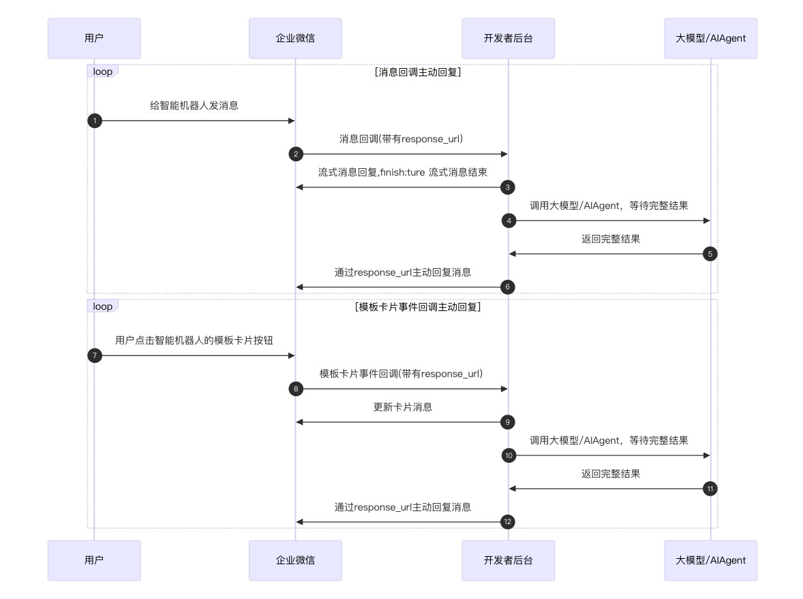

目录
当用户与智能机器人进行交互时，企业微信会将相关的交互事件回调到开发者设置的回调URL，回调中会返回一个 response_url 。开发者可根据事件类型先做出相应的响应，待处理完业务逻辑后，使用response_url主动调用接口回复消息，实现丰富的自定义功能。
目前有以下场景回调会返回 response_url ，支持主动回复消息：
1. 用户向智能机器人发送消息，前往查看
2. 用户点击模板卡片相关按钮等，前往查看
请注意，每个 response_url 用户可以调用接口一次， 该 response_url 有效期为 1 个小时，超过有效期将无法使用。
交互流程如下图所示：

开发者获取到response_url后，可以按以下说明向这个地址发起HTTP POST 请求，即可对相应的回调进行主动回复。下面举个简单的例子.
curl 'https://qyapi.weixin.qq.com/cgi-bin/aibot/response?response_code=RESPONSE_CODE' \ -H 'Content-Type: application/json' \ -d ' { "msgtype": "markdown", "markdown": { "content": "hello world" } }'点击复制
{ "msgtype": "markdown", "markdown": { "content": "# 一、标题\n## 二级标题\n### 三级标题\n# 二、字体\n*斜体*\n\n**加粗**\n# 三、列表 \n- 无序列表 1 \n- 无序列表 2\n - 无序列表 2.1\n - 无序列表 2.2\n1. 有序列表 1\n2. 有序列表 2\n# 四、引用\n> 一级引用\n>>二级引用\n>>>三级引用\n# 五、链接\n[这是一个链接](https:work.weixin.qq.com\/api\/doc)\n\n# 六、分割线\n\n---\n# 七、代码\n`这是行内代码`\n```\n这是独立代码块\n```\n\n# 八、表格\n| 姓名 | 文化衫尺寸 | 收货地址 |\n| :----- | :----: | -------: |\n| 张三 | S | 广州 |\n| 李四 | L | 深圳 |\n", "feedback": { "id": "FEEDBACKID" } } }点击复制
参数说明：
| 参数 | 类型 | 是否必填 | 说明 |
|---|---|---|---|
| msgtype | String | 是 | 消息类型，此时固定为：markdown |
| markdown.content | String | 是 | 消息内容，最长不超过20480个字节，必须是utf8编码。 |
| markdown.feedback.id | String | 否 | 若字段不为空值，回复的消息被用户反馈时候会触发回调事件。有效长度为 256 字节以内，必须是 utf-8 编码。 |
回复内容content字段支持常见的markdown格式
{ "msgtype": "template_card", "template_card": { "feedback": { "id": "FEEDBACKID" } } }点击复制
参数说明：
| 参数 | 类型 | 是否必填 | 说明 |
|---|---|---|---|
| msgtype | String | 是 | 消息类型，此时固定为：template_card。当且仅当回调的会话类型为单聊的时候，支持该主动回复类型 |
| template_card | Object | 是 | 模板卡片结构体，参考模板卡片类型中类型说明 |
| template_card.feedback.id | String | 否 | 特殊的该回复场景支持设置反馈信息。若字段不为空值，回复的消息被用户反馈时候会触发回调事件。有效长度为 256 字节以内，必须是 utf-8 编码。 |
特殊的，因主动回复可能跟用户交互触发的回调间隔较长时间，群聊中智能机器人主动回复消息的时候会引用触发回调的用户消息/被点击模板卡片消息。模板卡片消息不支持引用，会默认生成一条空消息进行引用。